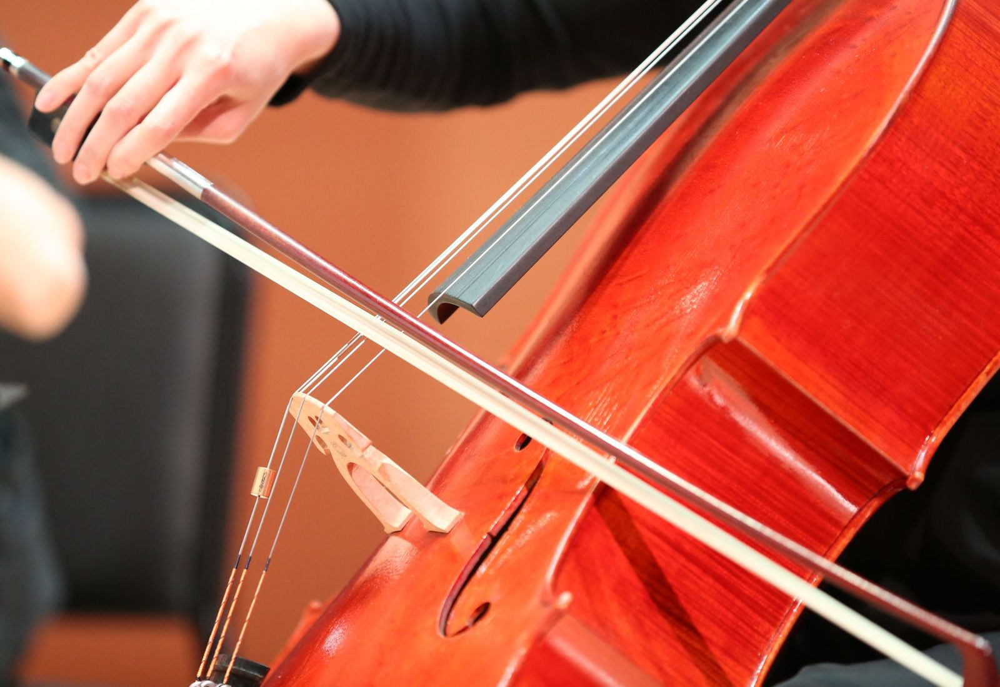

Odile Rannoch · Commissions
Commissions & session work
New pieces, other people's records, arrangements and licences. Quotes in writing before anything starts.
Commission a new work
- A conversation. What the piece is for, how long, for what forces, and where it will be premiered.
- A written agreement covering the composer's fee, the delivery date, the premiere and any exclusivity period.
- Composition and consultation. I work with the composer as the piece is written: trying passages, sending recordings, answering questions about the instrument.
- The premiere and, usually, a recording on the Fenwold imprint.
How a co-commission consortium works
Several presenters share one composer's fee, and each gets a regional premiere of the new piece in their own season. It is the most common way a new work of any length gets written, and the maths is simple.
| New work, about fifteen minutes, for cello and piano | $18,000 |
| Shared by four presenters | $4,500 each |
| What each presenter gets | A regional premiere and credit in the score |
Indicative only. Composers' fees vary with duration, forces and the composer; as a rough range, expect $1,000 to $2,000 per minute of music for an established composer. These are ranges, not promises.
Session recording
Session recording
Remote stems delivered as 24-bit/48k WAV, dry and with a room option, within five working days as standard and 48 hours at a rush rate.
In person in Boston with an engineer I work with.
What I need from you: a reference mix, a click, a score or chart if there is one, and a note about whether you want vibrato-heavy or plain.
I read well and quickly. If you need twelve cellos, I'll tell you to hire twelve cellists, and I'll help you find them.
| Remote stems, per track | $300–$600 |
| 48-hour rush | +50% |
| In-room, half day in Boston | From $900, plus studio |

Arranging
String arrangements for records and for screen, from a single cello line to a small section. Priced per arrangement, typically $400 to $1,500, and quoted before starting.
Licensing an existing recording
The recordings on the Fenwold imprint can be licensed for screen and advertising directly, since I control both the recordings and the imprint. A public-domain composition is free to perform, but a recording of it is not: the Bach is public domain, my recording of the Bach is licensed.